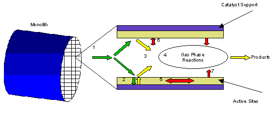
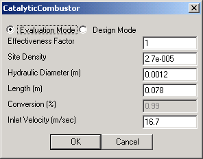
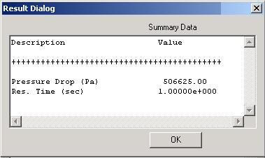

|
In fuel cell applications, catalytic combustion offers an efficient means of recovering heat from the low heating value fuel cell effluent streams that may otherwise be difficult to burn directly. This is particularly manifest in molten carbonate fuel cell (MCFC) systems where the cell discharges unreacted fuel at about 600°C. In these systems, the anode exhaust containing the unreacted fuel is mixed with air and then oxidized completely in a catalytic combustor (Ghezel-Ayagh and Maru, 2002). At present, solid oxide fuel cell (SOFC) systems operate at temperatures in the window of 800 – 1000°C, because the oxygen ion conduction in yttria stabilized zirconia (YSZ) is best in this temperature window. However, with the current push for low temperature solid electrolytes for SOFC systems, the operating temperature window is likely to fall in the range 700 – 800°C where catalytic oxidation of the lean fuel/air mixtures is an attractive option. In addition to the ability to burn lean fuel/air mixtures completely (Tucci, 1982), catalytic combustors operate at low enough temperatures such that NOx emissions are minimized (Kolaczkowski, 1995). |
 |
This User Interface requires the user to first specify the method of module calculation. Evaluation Mode (shown) allows the user to input the existing Length of a combustor and the module will thereby calculate the maximum possible conversion. When Design Mode is specified, the user inputs a Desired Conversion, and the module calculates the necessary combustor geometry to achieve that specified conversion.
Additional required user inputs include the Inlet Velocity through
the unit.
|
 |
The Summary screen shows the computed values for the Pressure Drop, as well as the Residence Time from the computations. When Evaluation Mode is specified in the UI, the Conversion Rate will also be displayed. When Design Mode is specified in the UI, then the Calculated Length will be displayed. |